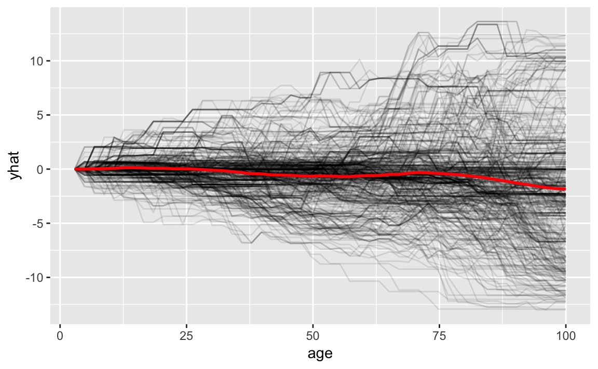
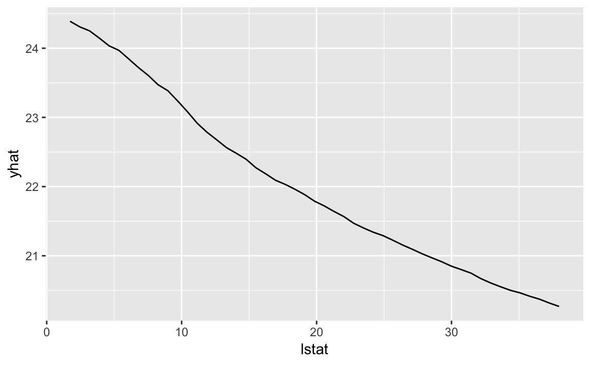
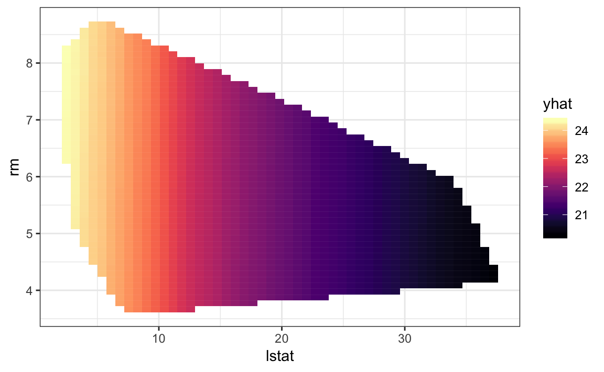

vignettes/pdp-reticulate.Rmd
pdp-reticulate.RmdIn this vignette, we’ll cover how to use reticulate to interface pdp with scikit-learn models. First, we’ll install (if necessary) and load any required packages:
# Install required packages
pkgs <- c("ggplot2", "pdp", "reticulate")
for (pkg in pkgs) {
if (!(pkg %in% installed.packages()[, "Package"])) {
install.packages(pkg)
}
}
# Load required packages
library(ggplot2) # for awesome graphics
library(pdp) # for feature effects
library(reticulate) # for R interface to PythonDepending on your setup, you may need to point to the location of a specific version of Python (you can use reticulate::py_config() to see what the default is on your system). Below, we point to a specific Anaconda distribution of Python installed in a local directory:
Next, we’ll set up the training data for modeling (in this case, we’ll use the well-known Boston housing data):
Finally, we’ll fit a \(k\)-nearest neighbor regressor (with \(k = 10\)) to the training data using scikit-learn’s neighbors module:
neighbors <- import("sklearn.neighbors")
knr <- neighbors$KNeighborsRegressor(n_neighbors = 10L)
knr_fit <- knr$fit(X, y)To use pdp with scikit-learn models via reticulate, you just need to tell partial() how to compute predictions for new data. For this, we can write a simple wrapper function (Note: see this vignette for details on using pdp with user-defined prediction functions). In particular, we’ll write two functions: one to compute predictions for individual conditional expectation (ICE) curves (Goldstein et al. 2015), and one to compute averaged predictions for partial dependence plots (PDPs) (Friedman 2001).
# For ICE curves, this function should return one prediction for each row
pfun_ice <- function(object, newdata) {
object$predict(newdata)
}
# For PDPs, this function should return one averaged prediction
pfun_pdp <- function(object, newdata) {
mean(object$predict(newdata))
}Next, we’ll call partial() as usual and pass the prediction wrappers to the pred.fun argument. In the first code chunk, we pass in the pfun_ice function and request centered ICE curves (i.e., center = TRUE):
partial(knr_fit, pred.var = "age", train = as.data.frame(X),
pred.fun = pfun_ice, plot = TRUE, plot.engine = "ggplot2",
center = TRUE, alpha = 0.1)
#> Warning: Ignoring unknown parameters: smooth, contour, contour.colour,
#> palette
While ICE curves only work for a single feature, PDPs can be plotted for any subset of the feature space (although, plotting more than 2–3 features is not very useful). In the code chunks below, we construct PDPs for lstat and (lstat, rm):
partial(knr_fit, pred.var = "lstat", train = as.data.frame(X),
pred.fun = pfun_pdp, plot = TRUE, plot.engine = "ggplot2")
partial(knr_fit, pred.var = c("lstat", "rm"), train = as.data.frame(X),
pred.fun = pfun_pdp, plot = TRUE, plot.engine = "ggplot2",
palette = "magma", chull = TRUE)
Friedman, Jerome H. 2001. “Greedy Function Approximation: A Gradient Boosting Machine.” The Annals of Statistics 29: 1189–1232. https://doi.org/10.1214/aos/1013203451.
Goldstein, Alex, Adam Kapelner, Justin Bleich, and Emil Pitkin. 2015. “Peeking Inside the Black Box: Visualizing Statistical Learning with Plots of Individual Conditional Expectation.” Journal of Computational and Graphical Statistics 24 (1): 44–65. https://doi.org/10.1080/10618600.2014.907095.